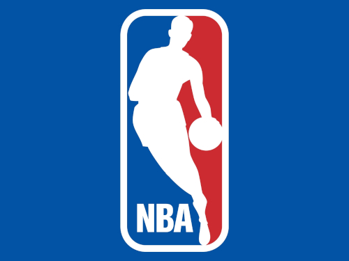

MEUS APRENDIZADOS
Imagem
Observe a seguinte imagem.

Acima temos o logo da NBA em aquivo tipo JPEG, onde a qualidade não importa tanto, mas sim o tamanho da foto.
Agora veja a seguinte imagem

Desta vez temos uma mesma imagem, só que agora transparente em formato PNG, neste formato se importa muito mais a qualidade da foto.
Adicionei uma quebra com a TAG <br>
Voltando ao assunto. A NBA tem diversos jogadores de diversos times. Alguns times formam a famosa "Panela" e tem grandes estrelas jogando juntos. Alguns exemplos de panelas formadas nessesx últimos anos:
- Golden State Warriors
- Quem não se recorda do time histórico do GSW? Um grande time que conseguiu ser campeão três vezes, tendo um trio implavável, sendo dois conhecidos como SPLASH BROTHERS. Essa panela foi composta por:
- Stephen Curry
- Klay Thompson
- Kevin Durant
- Cleveland Cavaliers
- Aa o Cleveland Cavaliers, Teve seu grande momento de glória com dois caras que foram extremamente importantes, um conhecido como KING e o outro um dos armadores mais habilidosos de todos os tempos. Eles conseguiram vencer a final dos Playoffs abatendo nada mais e nada menos que.. o Golden State!
- Lebron "KING" James
- Kyrie Irving
- Houston Rockets
- O Houston hoje perdeu sua maior estrela, ele não conseguiu ser campeão, porém não possod eixar de anotar sua panela com um dos maiores arremessadores do mundo junto ao rei dos tripple-double:
- James Harden
- Russel Westbrook
- Los Angeles Lakers
- Esse é recente, um time onde vinha fazendo uma campanha muito abaixo nos últimos anos trouxe uma animação gigantesca com uma expectativa altissima ao trazer nada mais e anda menos que o KING JAMES. A, o time se consagrou campeão em 2020 e hoje forma uma panela com jogadores nivel All Star. Apesar das últimas derrotas consecutivas bem... vergonhosas, não dá pra deixar de fora da lista.
- Lebron James
- Russel Westbrook
- Anthony Davis
- Dwight Howard
- Carmelo Anthony
- Brooklyns Nets
- Por fim, mas não menos importante, está presente os Nets, infelizmente (para mim) acabou perdendo a final dos Playoffs de 2021 para os Bucks, tendo grandes estrelas em seu time ele é composto por:
- Kevin Durant
- Kyrie Irving
- James Harden
E aí, curtiu a lista? Conta para mim no meu email:
joao.tecmeca@gmail.com.
Essas panelas acontecem pois os jogadores se respeitam muito, como é o caso do Antetokounmpo sobre o KD, o qual ele considera o melhor do mundo e provavelmente, minha opinião, gostaria de jogar junto pela admiração.
KD é o melhor do mundo
Ele já mostrou no passado, ele está mostrando agora. Eu estou apenas tentando melhorar.
Confira a entrevista do craque clicando aqui!